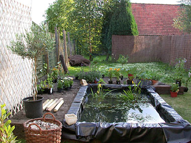

Vijver – Day Three
woensdag 16 juli 2003 | Zomaar
In de ochtend van de derde dag — voor de brandende hel opnieuw losbrak — hebben we nog snel de losliggende aarde rond de vijver in een perkje geharkt. In de namiddag brachten we een bezoekje aan Floralux in Dadizele. Ik was er nog nooit geweest, maar de geruchten bleken te kloppen: dit is een erg compleet en zeer verzorgd tuincentrum! ‘s Avonds hebben we onze groene schat aan de bodem en het verse water toevertrouwd, en net voor de zon haar laatste groet bracht, konden we de voltooiing van ons projectje overschouwen. Wel… de bijna-voltooiing.
To do
- Boorden afwerken en bijvullen tot de rand: de folie die nu nog over de randen van de treinbalken hangt, zou ik volgende week willen bevestigen met een waterbestendige houtsoort aan de binnenrand van de vijver. Nu ziet het er allemaal nog een beetje slordig uit.
- De waterkwaliteit in de gaten houden en desnoods een circulatiepomp of een filter plaatsen.
- Drie schitterende koi’s kopen (Japanse karpers)
Totale kostprijs
- Materiaal: 120 EUR (balken, folie, paaltjes, doeken, …)
- Planten: 150EUR

Johan Beckers op 18 juli 2003
Nu nog 100 kilo zand en een paar palmbomen, en het is AF :-)